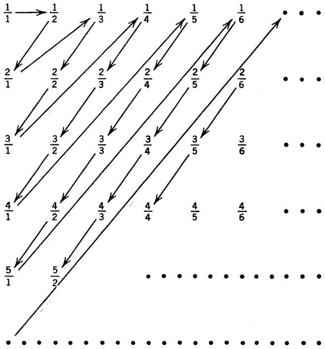

我们从 §1.1 的思想出发，深入分析实数的概念及其与极限的联系。先以自然数为基础，用构造的方法定义数的连续统，然后证明扩充后的数仍然满足算术法则以及度量所要求的其他条件。
完整的论述需要另写一本书，¹ 这里仅指出主要步骤。读者在钻研这些略显繁琐的材料时，也许会惊叹，人竟然能单从自然数出发，建立起这样一个逻辑自洽、又如此适于科学度量的数系。²
原注 1（第 89 页） 例如可参阅 E. Landau，Foundations of Analysis ，第 2 版，Chelsea，纽约，1960 年。
原注 2（第 89 页） 也可以用纯公理的方法引入实数，把它的一切基本性质作为公理接受。这里采取的办法，原则上只接受自然数的公理，包括数学归纳法原理，再从这个基础上构造有理数和实数。这样，实数的“公理”原则上就只是关于自然数的定理，需要加以证明。实际上，从自然数构造有理数并推导出有理数的基本性质并无困难，因此我们直接从已经熟悉的有理数出发。
a. 有理数
用有理区间定义极限。 我们接受有理数系及其通常的性质，这些性质可以从自然数的基本性质导出。有理数可以比较大小，所以可以定义“有理区间”，即介于两个给定有理数之间的有理数所成的集合（包含两个端点的区间称为闭区间）。端点为 a , b a,b a , b ∣ b − a ∣ |b-a| ∣ b − a ∣
在有理数范围内可以定义数列和极限（见第 70 页）。给定有理数的无穷序列 a 1 , a 2 , … a_1,a_2,\ldots a 1 , a 2 , … r r r r r r a n a_n a n a n a_n a n
lim n → ∞ a n = r .
\lim_{n\to\infty}a_n=r.
n → ∞ lim a n = r . 立刻可知，一个有理数列至多只有一个有理极限。对于有有理极限的有理数列，和、差、积、商的极限也服从通常的法则（见第 71 页）。
这个定义还有一个显然的推论，即取极限保持次序。若 lim a n = a \lim a_n=a lim a n = a lim b n = b \lim b_n=b lim b n = b n n n a n ≤ b n a_n\le b_n a n ≤ b n a ≤ b a\le b a ≤ b a n < b n a_n<b_n a n < b n a ≤ b a\le b a ≤ b a n = 1 − 2 / n a_n=1-2/n a n = 1 − 2/ n b n = 1 − 1 / n > a n b_n=1-1/n>a_n b n = 1 − 1/ n > a n 1 1 1
关于极限的命题可以用有理数的零列 来表述。所谓零列，指有理数列 a 1 , a 2 , … a_1,a_2,\ldots a 1 , a 2 , …
lim n → ∞ a n = 0.
\lim_{n\to\infty}a_n=0.
n → ∞ lim a n = 0. 我们也说，当 n n n a n a_n a n ε \varepsilon ε n n n ∣ a n ∣ < ε |a_n|<\varepsilon ∣ a n ∣ < ε a n = 1 / n a_n=1/n a n = 1/ n a n a_n a n r r r r − a n r-a_n r − a n
b. 由有理区间套确定的实数
第 5 页曾从直观上指出，有理点在实轴上稠密，两个不同的实数之间总有有理数。因此可以设想，单凭一个实数与各有理数的大小关系，就能严格定义这个实数。我们现在来实现这个想法。
所谓有理区间套 （见第 8 页），指一列有理端点的闭区间 I n = [ a n , b n ] I_n=[a_n,b_n] I n = [ a n , b n ]
a n − 1 ≤ a n ≤ b n ≤ b n − 1 , lim n → ∞ ( b n − a n ) = 0.
a_{n-1}\le a_n\le b_n\le b_{n-1},\qquad \lim_{n\to\infty}(b_n-a_n)=0.
a n − 1 ≤ a n ≤ b n ≤ b n − 1 , n → ∞ lim ( b n − a n ) = 0. 具有包含关系的每个区间 I n I_n I n r r r I n I_n I n n n n I n I_n I n r r r n n n r < a n r<a_n r < a n I n I_n I n r r r n n n n n n r > b n r>b_n r > b n r r r a n a_n a n b n b_n b n
原注 1（第 91 页） 即所谓“戴德金分割”。
如果第二类非空，其中就恰有一个有理数 r r r r r r r r r I n I_n I n 表示有理数 r r r [ r − 1 / n , r + 1 / n ] [r-1/n,r+1/n] [ r − 1/ n , r + 1/ n ] r r r
如果第二类为空，这个区间套就不表示有理数。我们用这种区间套来表示无理数。各个区间 [ a n , b n ] [a_n,b_n] [ a n , b n ]
因此，若两个有理区间套 [ a n , b n ] [a_n,b_n] [ a n , b n ] [ a n ′ , b n ′ ] [a_n',b_n'] [ a n ′ , b n ′ ] 等价 。请读者证明，两个区间套等价的充要条件是 a n ′ − a n a_n'-a_n a n ′ − a n n n n
a n ≤ b n ′ , a n ′ ≤ b n .
a_n\le b_n',\qquad a_n'\le b_n.
a n ≤ b n ′ , a n ′ ≤ b n . 我们给每个有理区间套 [ a n , b n ] [a_n,b_n] [ a n , b n ] 实数 。两个不同的区间套如果等价，就认为它们确定的实数相等。因此，表示一个实数的，就是这些彼此等价的有理区间套对有理数给出的三类划分。如果第二类由一个有理数 r r r r r r
译者注 这里的“第二类为空”只说没有一个有理数 同时落在所有区间中。例如，用越来越精确的有理上下界夹住正方形的对角线与边长之比，得不到共同的有理点，但这组上下界恰好给出了 2 \sqrt 2 2
*c. 实数的序、极限与算术运算
现在已有了实数的定义，我们可以定义实数的序、和、差、积、极限等，再证明它们具有通常的性质。为使理论自洽，关于实数的每条定义都须符合两项要求。第一，当所讨论的实数为有理数时，新定义必须与原来的意义一致。第二，定义必须与所选用的表示该实数的区间套无关。
*具有实端点的区间
直到现在，即使在定义无理数时，区间套的端点也一直限于有理数。我们必须解除这一限制，说明实数完全可以像有理数一样使用。每一步都要小心，避免借用尚未从出发点——有理数——推导出来的事实。
用 x , y , … x,y,\ldots x , y , … x x x [ a n , b n ] [a_n,b_n] [ a n , b n ] x ∼ { [ a n , b n ] } x\sim\{[a_n,b_n]\} x ∼ {[ a n , b n ]} x x x r r r r r r r < x r<x r < x r = x r=x r = x r > x r>x r > x x x x x x x n n n r < a n r<a_n r < a n r < x r<x r < x n n n a n ≤ r ≤ b n a_n\le r\le b_n a n ≤ r ≤ b n r = x r=x r = x n n n r > b n r>b_n r > b n r > x r>x r > x
借助实数与有理数的比较，可以比较两个实数。设 x ∼ { [ a n , b n ] } x\sim\{[a_n,b_n]\} x ∼ {[ a n , b n ]} y ∼ { [ α n , β n ] } y\sim\{[\alpha_n,\beta_n]\} y ∼ {[ α n , β n ]} r r r x < r < y x<r<y x < r < y x < y x<y x < y r r r x < y x<y x < y r r r n n n b n < r < α n b_n<r<\alpha_n b n < r < α n n n n b n < α n b_n<\alpha_n b n < α n x < y x<y x < y y < x y<x y < x x = y x=y x = y x < y x<y x < y y < z y<z y < z x < z x<z x < z
任给两个实数 x , y x,y x , y x < y x<y x < y x = y x=y x = y y < x y<x y < x x ≠ y x\ne y x = y y y y x x x y < x y<x y < x x < y x<y x < y x < y x<y x < y y < x y<x y < x
稠密性。 这些定义立即给出有理数的稠密性，即在两个不同实数 x , y x,y x , y r r r x x x [ a n , b n ] [a_n,b_n] [ a n , b n ] n n n a n ≤ x ≤ b n a_n\le x\le b_n a n ≤ x ≤ b n m m m x < a m x<a_m x < a m n n n b n < a m b_n<a_m b n < a m [ a n , b n ] [a_n,b_n] [ a n , b n ]
实数之间的序一经确定，就可以谈实端点的区间。有理数的稠密性保证了每个具有不同端点的这类区间都含有有理数。
极限。 若含有实数 x x x n n n x n x_n x n x x x x 1 , x 2 , … x_1,x_2,\ldots x 1 , x 2 , … 极限 。这与先前用有理区间给出的定义一致。有理数列若有一个有理极限，按现在这种更一般的实极限定义，它也有同一极限。由极限的定义，如果 x x x [ a n , b n ] [a_n,b_n] [ a n , b n ]
x = lim n → ∞ a n = lim n → ∞ b n .
x=\lim_{n\to\infty}a_n=\lim_{n\to\infty}b_n.
x = n → ∞ lim a n = n → ∞ lim b n . *算术。 设 x ∼ { [ a n , b n ] } x\sim\{[a_n,b_n]\} x ∼ {[ a n , b n ]} y ∼ { [ α n , β n ] } y\sim\{[\alpha_n,\beta_n]\} y ∼ {[ α n , β n ]}
x + y ∼ { [ a n + α n , b n + β n ] } , x − y ∼ { [ a n − β n , b n − α n ] } .
x+y\sim\{[a_n+\alpha_n,b_n+\beta_n]\},\qquad
x-y\sim\{[a_n-\beta_n,b_n-\alpha_n]\}.
x + y ∼ {[ a n + α n , b n + β n ]} , x − y ∼ {[ a n − β n , b n − α n ]} . 验证这些定义有意义并不困难，细节留给读者（见第 116 页第 3 题）。以 x − y x-y x − y [ a n − β n , b n − α n ] [a_n-\beta_n,b_n-\alpha_n] [ a n − β n , b n − α n ] z z z z z z x , y x,y x , y x , y x,y x , y z z z r < z r<z r < z n n n r < a n − β n r<a_n-\beta_n r < a n − β n r r r s − t s-t s − t s , t s,t s , t s < x s<x s < x t > y t>y t > y
在 y > 0 y>0 y > 0 x , y x,y x , y
x ⋅ y ∼ { [ a n α n , b n β n ] } ,
x\cdot y\sim\{[a_n\alpha_n,b_n\beta_n]\},
x ⋅ y ∼ {[ a n α n , b n β n ]} , 这里已假设所有 α n > 0 \alpha_n>0 α n > 0 y < 0 y<0 y < 0 y = 0 y=0 y = 0 x y xy x y y y y
x ⋅ y ∼ { [ a n y , b n y ] } .
x\cdot y\sim\{[a_n y,b_n y]\}.
x ⋅ y ∼ {[ a n y , b n y ]} . 对自然数 y = m y=m y = m x ⋅ y = m x x\cdot y=mx x ⋅ y = m x x x x m x = x + ( m − 1 ) x = x + x + ⋯ + x mx=x+(m-1)x=x+x+\cdots+x m x = x + ( m − 1 ) x = x + x + ⋯ + x
译者注 原书第 94 页第一条积公式仅明说 α n > 0 \alpha_n>0 α n > 0 a n ≥ 0 a_n\ge0 a n ≥ 0 a n α n , a n β n , b n α n , b n β n a_n\alpha_n,a_n\beta_n,b_n\alpha_n,b_n\beta_n a n α n , a n β n , b n α n , b n β n y y y
这些算术运算服从通常的法则。特别地，x < y x<y x < y 0 < y − x 0<y-x 0 < y − x ∣ x + y ∣ ≤ ∣ x ∣ + ∣ y ∣ |x+y|\le |x|+|y| ∣ x + y ∣ ≤ ∣ x ∣ + ∣ y ∣ ε \varepsilon ε n n n ∣ x − x n ∣ < ε |x-x_n|<\varepsilon ∣ x − x n ∣ < ε x = lim n → ∞ x n x=\lim_{n\to\infty}x_n x = lim n → ∞ x n
我们现在验证所谓的阿基米德公理 。设 x , y x,y x , y x > 0 x>0 x > 0 m m m m x > y mx>y m x > y
实质上，这意味着两个非零实数相比较，其中一个不可能相对于另一个“无限小”或“无限大”。在我们的体系里，阿基米德公理其实是个定理。在有理数范围内，它是整数通常性质的推论。现在设 x ∼ { [ a n , b n ] } x\sim\{[a_n,b_n]\} x ∼ {[ a n , b n ]} y ∼ { [ α n , β n ] } y\sim\{[\alpha_n,\beta_n]\} y ∼ {[ α n , β n ]} x > 0 x>0 x > 0 n n n a n > 0 a_n>0 a n > 0 n n n a n , β n a_n,\beta_n a n , β n m m m m a n > β n ma_n>\beta_n m a n > β n m x > β n ≥ y mx>\beta_n\ge y m x > β n ≥ y
d. 数的连续统的完备性。闭区间的紧致性。收敛准则
引进实数以后，有理数的极限运算才得以顺利进行。可是假如对实数作同样的运算，又得引进某种“非实数”，把它们填在实数之间，而且如此无穷无尽，那么引入实数的价值便十分有限。幸而实数的定义已足够完备。若想再扩充数系，就必须舍弃它的某项基本性质，例如引入复数时就必须舍弃原有意义下的“序”。
连续性原理
实数连续统的这种完备性 可以用基本的连续性原理（参见第 8 页）来表达：每个实端点的区间套都含有一个公共实数。 为证明这一点，考虑一列闭区间 [ x n , y n ] [x_n,y_n] [ x n , y n ] y n − x n y_n-x_n y n − x n x x x [ x n , y n ] [x_n,y_n] [ x n , y n ] x n x_n x n y n y_n y n x x x [ x n , y n ] [x_n,y_n] [ x n , y n ] [ a n , b n ] [a_n,b_n] [ a n , b n ] x x x
具体地说，取 a n a_n a n x n x_n x n p / 2 n p/2^n p / 2 n b n b_n b n y n y_n y n q / 2 n q/2^n q / 2 n p , q p,q p , q [ a n , b n ] [a_n,b_n] [ a n , b n ] x x x x x x [ x m , y m ] [x_m,y_m] [ x m , y m ] x < x m x<x_m x < x m r r r x < r < x m x<r<x_m x < r < x m n n n
y n ≤ b n < r < x m ≤ x n ,
y_n\le b_n<r<x_m\le x_n,
y n ≤ b n < r < x m ≤ x n , 这是不可能的。因此每一个 [ x m , y m ] [x_m,y_m] [ x m , y m ] x x x
魏尔斯特拉斯原理与紧致性
连续性原理还有几种重要的表述。第一种是魏尔斯特拉斯关于有界数列的极限点 （或聚点 ）存在的原理。若包含 x x x n n n x n x_n x n x x x x 1 , x 2 , … x_1,x_2,\ldots x 1 , x 2 , … x x x 几乎所有 x n x_n x n n n n 1 , 2 , 3 , 4 , … 1,2,3,4,\ldots 1 , 2 , 3 , 4 , … 1 , − 1 , 1 , − 1 , … 1,-1,1,-1,\ldots 1 , − 1 , 1 , − 1 , … + 1 , − 1 +1,-1 + 1 , − 1 每个有界数列至少有一个极限点。
为了证明它，注意 x 1 , x 2 , … x_1,x_2,\ldots x 1 , x 2 , … [ y 1 , z 1 ] [y_1,z_1] [ y 1 , z 1 ] x n x_n x n [ y n , z n ] [y_n,z_n] [ y n , z n ] m m m x m x_m x m [ y n , z n ] [y_n,z_n] [ y n , z n ] [ y n + 1 , z n + 1 ] [y_{n+1},z_{n+1}] [ y n + 1 , z n + 1 ] x x x x x x n n n [ y n , z n ] [y_n,z_n] [ y n , z n ] x m x_m x m
还可以把极限点定义为原无穷数列的子列 的极限。从原数列抽出的任意无穷序列 x n 1 , x n 2 , x n 3 , … x_{n_1},x_{n_2},x_{n_3},\ldots x n 1 , x n 2 , x n 3 , … n 1 < n 2 < n 3 < ⋯ n_1<n_2<n_3<\cdots n 1 < n 2 < n 3 < ⋯ x x x x x x x x x x n 1 , … , x n k − 1 x_{n_1},\ldots,x_{n_{k-1}} x n 1 , … , x n k − 1 n > n k − 1 n>n_{k-1} n > n k − 1 ∣ x n − x ∣ < 2 − k |x_n-x|<2^{-k} ∣ x n − x ∣ < 2 − k n n n n k n_k n k
因此，魏尔斯特拉斯原理也可表述为以下定理。
定理。 每个有界的无穷实数列都有收敛子列。
若由一个集合的元素组成的每个数列都有子列收敛于该集合的某个元素，就称这个集合为紧集 。于是以上定理也可以说成：实数的有界闭区间是紧集。
单调数列
这个定理特别蕴含了一个结论：每个有界单调数列都收敛。 事实上，设 x 1 , x 2 , … x_1,x_2,\ldots x 1 , x 2 , … x x x x x x x x x x n > x x_n>x x n > x m > n m>n m > n x m ≥ x n > x x_m\ge x_n>x x m ≥ x n > x x x x x n x_n x n x x x
柯西收敛准则
数列有界且单调，是它收敛的充分条件。这句话的重要之处在于，事先无须知道极限的值，往往就能证明极限存在。而且在具体应用中，有界性与单调性通常都容易检验。然而，收敛数列虽一定有界，却不一定单调。我们还需要适用范围更广的判据。柯西的内在收敛准则 正是这样一个判据，它给出了数列有极限的充要条件。
数列 x 1 , x 2 , x 3 , … x_1,x_2,x_3,\ldots x 1 , x 2 , x 3 , … ε \varepsilon ε N N N n , m n,m n , m N N N ∣ x n − x m ∣ < ε |x_n-x_m|<\varepsilon ∣ x n − x m ∣ < ε 换言之，只要下标都足够大，任意两项之差的绝对值就可以小于预先指定的 ε \varepsilon ε
先证必要性。若 x = lim x n x=\lim x_n x = lim x n n n n x n x_n x n x x x ε / 2 \varepsilon/2 ε /2 x n , x m x_n,x_m x n , x m ε \varepsilon ε ε > 0 \varepsilon>0 ε > 0 n , m n,m n , m ∣ x n − x m ∣ < ε |x_n-x_m|<\varepsilon ∣ x n − x m ∣ < ε N N N x n x_n x n x N x_N x N 1 1 1 x n x_n x n 2 2 2 x x x x x x m m m x m x_m x m x x x x x x
e. 上确界与下确界
对一个非空有界的实数集，存在“尽可能好”的上界和下界，这一点非常重要。如果一切属于 S S S S S S 有界 。这时 S S S B B B S S S x x x
x ≤ B ( x ∈ S ) .
x\le B\qquad (x\in S).
x ≤ B ( x ∈ S ) . 类似地，它也有下界 A A A
x ≥ A ( x ∈ S ) .
x\ge A\qquad (x\in S).
x ≥ A ( x ∈ S ) . 例如，对于自然数的倒数 1 , 1 2 , 1 3 , 1 4 , … 1,\tfrac12,\tfrac13,\tfrac14,\ldots 1 , 2 1 , 3 1 , 4 1 , … B ≥ 1 B\ge1 B ≥ 1 A ≤ 0 A\le0 A ≤ 0 1 1 1 0 0 0 上确界 （supremum），最大下界称为它的下确界 （infimum）。一般来说，集合的上、下确界或者属于集合，或者至少可以由集合内的一列数趋近。事实上，若 S S S b b b S S S b b b S S S b b b S S S x 1 , x 2 , … x_1,x_2,\ldots x 1 , x 2 , … b b b b b b
有界集 S S S n n n B n B_n B n S S S 2 n 2^n 2 n x ∈ S x\in S x ∈ S n n n
x ≤ B n + 1 ≤ B n ≤ B 1 .
x\le B_{n+1}\le B_n\le B_1.
x ≤ B n + 1 ≤ B n ≤ B 1 . 因此 B n B_n B n b b b b b b S S S
译者注 “分母是 2 n 2^n 2 n k / 2 n k/2^n k / 2 n 2 − n 2^{-n} 2 − n 2 − n − 1 2^{-n-1} 2 − n − 1 B n + 1 ≤ B n B_{n+1}\le B_n B n + 1 ≤ B n B n − 2 − n B_n-2^{-n} B n − 2 − n b b b
f. 有理数的可数性
十九世纪后期，关于有理数的一个惊人发现，推动了格奥尔格·康托尔自 1872 年以后创立集合论。虽然有理数稠密，不能按大小把它们依次排成一列，却可以用另一种次序把它们排成无穷序列 r 1 , r 2 , … , r n , … r_1,r_2,\ldots,r_n,\ldots r 1 , r 2 , … , r n , … n n n 有理数可数 ，或者说，它们构成一个可数集 。
证明这个结果，只须给出把正有理数排成一列的办法。每个正有理数都可写成 p / q p/q p / q p , q p,q p , q k k k k − 1 k-1 k − 1 p / q p/q p / q p + q = k p+q=k p + q = k p p p k = 2 , 3 , 4 , … k=2,3,4,\ldots k = 2 , 3 , 4 , … 1 1 1
1 1 , 1 2 , 2 1 , 1 3 , 3 1 , 1 4 , 2 3 , 3 2 , 4 1 , 1 5 , 5 1 , 1 6 , 2 5 , …
\tfrac11,\tfrac12,\tfrac21,\tfrac13,\tfrac31,\tfrac14,\tfrac23,\tfrac32,\tfrac41,\tfrac15,\tfrac51,\tfrac16,\tfrac25,\ldots
1 1 , 2 1 , 1 2 , 3 1 , 1 3 , 4 1 , 3 2 , 2 3 , 1 4 , 5 1 , 1 5 , 6 1 , 5 2 , … 其中每个正有理数恰好出现一次。要类似地排出所有有理数，或只排出某个特定区间内的全部有理数，也很容易。

图 1.S.1 正有理数的可数性。 只有联系另一个基本事实——全体实数所成的集合不可数 ¹——才能看清这个结果的意义。有理数集与实数集虽同为无穷集，实数集的元素却比有理数集的“多得多”。可见可数性对一个集合实在是很强的限制。
原注 1（第 99 页） 证明以及关于集合论基本事实的简要讨论，见柯朗与罗宾斯的《数学是什么？》第 81 页。
集合论在澄清数学概念方面起着重要作用，尽管毫无限制地使用它曾引出悖论和争论。这些悖论并不影响构造性数学的实质内容，在关于实数集的理论中也不会出现。